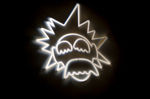
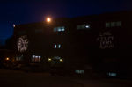
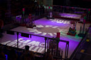
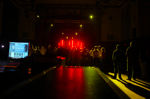
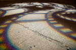
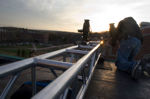
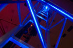
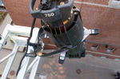
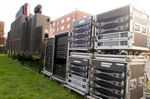

Lens and Lights - Photo Gallery
Photos by Matt Dodd
(flickr)
Lens and Lights - 2008-2009

Soccom Al

Alumni Gym

BattleCry 10

Cartel

Film Gobo

Truss Hang

L25 Truss

Source 4

Wall of Sound
Design by Matt Dodd | 2010